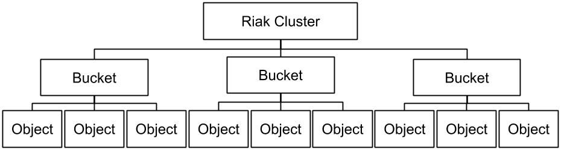

<style>
.markdown-body {
  box-sizing: border-box;
  min-width: 200px;
  max-width: 980px;
margin: 0 auto;
padding: 45px;
}

@media (max-width: 767px) {
  .markdown-body {
padding: 15px;
  }
}
</style>
<article class="markdown-body">
<!DOCTYPE html>
<html>
<head>
  <title>chap6/README.md</title>
  <link rel="stylesheet" href="../.github-markdown-css/github-markdown.css">
</head>
<body>
<div class="markdown-heading"><h1 class="heading-element">Chapter 6 - RIAK, the NoSQL Database</h1><a id="user-content-chapter-6---riak-the-nosql-database" class="anchor" aria-label="Permalink: Chapter 6 - RIAK, the NoSQL Database" href="#chapter-6---riak-the-nosql-database"><span aria-hidden="true" class="octicon octicon-link"></span></a></div>
<p><em>Estimated time to finish chapter: 2.5 days.</em></p>
<p>In this chapter, we will see how to use <strong><code>Riak</code></strong>, a <strong>distributed</strong> NoSQL key-value data store, on a distant <a href="https://docs.riak.com/riak/kv/latest/learn/concepts/clusters/index.html" rel="nofollow">cluster</a>.
You will query the database from your <strong>Elixir</strong> application via the <a href="https://docs.riak.com/riak/kv/2.2.3/developing/api/http/index.html" rel="nofollow">Riak HTTP API</a>.</p>
<p>Throughout this chapter, you will:</p>
<ul>
<li>create a <em>bucket</em> in <strong>Riak</strong>, in which you will store some orders;</li>
<li>index these orders to make them searchable from your backend and frontend;</li>
<li>learn the query syntax to search for orders, and retrieve them via the Riak HTTP API.</li>
</ul>
<div class="markdown-heading"><h2 class="heading-element">Step 0 - What is Riak?</h2><a id="user-content-step-0---what-is-riak" class="anchor" aria-label="Permalink: Step 0 - What is Riak?" href="#step-0---what-is-riak"><span aria-hidden="true" class="octicon octicon-link"></span></a></div>
<p>At KBRW, we use a subset of Riak called <strong>Riak KV</strong> which, you guessed it, serves as a <strong>key-value store</strong>. You can <a href="https://docs.riak.com/riak/kv/latest/learn/why-riak-kv/index.html" rel="nofollow">learn more about its advantages here</a>.</p>
<p>There are no tables, columns, or rows. In Riak, we deal in <strong>objects</strong>, stored in <strong>buckets</strong>, that we can retrieve using their <strong>keys</strong>. It works a little bit like ETS tables in that way, except it's persistent.</p>
<p><a target="_blank" rel="noopener noreferrer" href="../img/riak_data_architecture.jpg"></a></p>
<p>If we wish to look for an object without knowing its key, we can attach a <strong>schema</strong> to a bucket: a description of the names and types of fields we want to be able to look for in an object. That schema will be used to to compile an <strong>index</strong>: basically a phonebook of all those fields on all objects, associated with their respective keys. Compiling this index is called <strong>indexing</strong>.</p>
<p><em>Note that "buckets" don't really exist: all objects are stored in the same pool of memory... but Riak adds a flag to each object to simulate a bucket for us.</em></p>
<p>One of the main advantages of Riak is that it is distributed across mutliple instances, as a <strong>cluster</strong>, which lets us handle a bigger volume of requests. They all share the data and are synchronized automatically, which is crucial for stability. For example, hardware failure, or even a datacenter fire, can cause a database node to drop. But as long as half of the database nodes are still online, our database stays available.</p>
<p>From your point of view Riak will act like a single instance: it does all the distribution and consistency for you, and passes your queries to the correct nodes.</p>
<div class="markdown-heading"><h2 class="heading-element">Step 1 - Accessing the server with Erlang's <code>:httpc</code>
</h2><a id="user-content-step-1---accessing-the-server-with-erlangs-httpc" class="anchor" aria-label="Permalink: Step 1 - Accessing the server with Erlang's :httpc" href="#step-1---accessing-the-server-with-erlangs-httpc"><span aria-hidden="true" class="octicon octicon-link"></span></a></div>
<p>Since our database is on a server, we'll need to communicate with it using the HTTP protocol.</p>
<p>For all HTTP interactions, we will use <strong>Erlang's</strong> <code>:httpc</code> module. Have a look at <a href="http://erlang.org/doc/man/httpc.html" rel="nofollow">the <code>:httpc</code> module documentation</a>.</p>
<p><code>:httpc</code> needs the <code>:inets</code> and <code>:ssl</code> applications to be launched in order to work. Let's add them to our <strong>mix.exs</strong>:</p>
<div class="highlight highlight-source-elixir"><pre><span class="pl-k">def</span> <span class="pl-en">application</span> <span class="pl-k">do</span>
  <span class="pl-kos">[</span> 
    <span class="pl-pds">extra_applications: </span><span class="pl-kos">[</span><span class="pl-pds">:logger</span><span class="pl-kos">,</span> <span class="pl-pds">:inets</span><span class="pl-kos">,</span> <span class="pl-pds">:ssl</span><span class="pl-kos">]</span><span class="pl-kos">,</span>
    <span class="pl-pds">mod: </span><span class="pl-kos">{</span><span class="pl-v">TutoElixirKBRW</span><span class="pl-kos">,</span> <span class="pl-kos">[</span><span class="pl-kos">]</span><span class="pl-kos">}</span>
  <span class="pl-kos">]</span>
<span class="pl-k">end</span></pre></div>
<p>A request using <code>:httpc</code> will look a bit like this:</p>
<div class="highlight highlight-source-elixir"><pre><span class="pl-kos">{</span><span class="pl-pds">:ok</span><span class="pl-kos">,</span> <span class="pl-kos">{</span><span class="pl-kos">{</span><span class="pl-c">_</span><span class="pl-kos">,</span> <span class="pl-s1">response_code</span><span class="pl-kos">,</span> <span class="pl-c">_message</span><span class="pl-kos">}</span><span class="pl-kos">,</span> <span class="pl-c">_response_headers</span><span class="pl-kos">,</span> <span class="pl-s1">body</span><span class="pl-kos">}</span><span class="pl-kos">}</span> <span class="pl-c1">=</span> <span class="pl-v">:httpc</span><span class="pl-c1">.</span><span class="pl-en">request</span><span class="pl-kos">(</span><span class="pl-pds">:get</span><span class="pl-kos">,</span> <span class="pl-kos">{</span><span class="pl-s">'my_url'</span><span class="pl-kos">,</span> <span class="pl-s1">my_headers</span><span class="pl-kos">}</span><span class="pl-kos">,</span> <span class="pl-kos">[</span><span class="pl-kos">]</span><span class="pl-kos">,</span> <span class="pl-kos">[</span><span class="pl-kos">]</span><span class="pl-kos">)</span></pre></div>
<p>The server we set up for you listens to all requests, but decides which requests it will accept using <a href="https://developer.mozilla.org/en-US/docs/Web/HTTP/Authentication#basic_authentication_scheme" rel="nofollow">basic authentication</a>.</p>
<p>It's pretty simple: all you have to do is supply a username and password under the format <code>username:password</code>, encode this string using base 64,
then pass it inside your http headers as shown below.</p>
<p><em>The more astute of you might have recognized that base64 encode is reversible, and therefore, <strong>not secure</strong>. We have other ways of securing our http requests and network.</em></p>
<p><strong>Note that you won't create a Riak cluster on your own. A shared cluster is available on Kbrw cloud though the gateway at the adress <a href="https://kbrw-sb-tutoex-riak-gateway.kbrw.fr" rel="nofollow">https://kbrw-sb-tutoex-riak-gateway.kbrw.fr</a></strong></p>
<p>Let's create a module named Riak and flesh it out a bit. Here's what your url and http header will look like:</p>
<div class="highlight highlight-source-elixir"><pre><span class="pl-k">defmodule</span> <span class="pl-v">Riak</span> <span class="pl-k">do</span>
  <span class="pl-k">def</span> <span class="pl-en">url</span><span class="pl-kos">,</span> <span class="pl-pds">do: </span><span class="pl-s">"https://kbrw-sb-tutoex-riak-gateway.kbrw.fr"</span>
  
  <span class="pl-k">def</span> <span class="pl-en">auth_header</span> <span class="pl-k">do</span>
    <span class="pl-s1">username</span> <span class="pl-c1">=</span> <span class="pl-s">"sophomore"</span>
    <span class="pl-s1">password</span> <span class="pl-c1">=</span> <span class="pl-s">"jlessthan3tutoex"</span>
    <span class="pl-s1">auth</span> <span class="pl-c1">=</span> <span class="pl-v">:base64</span><span class="pl-c1">.</span><span class="pl-en">encode_to_string</span><span class="pl-kos">(</span><span class="pl-s">"<span class="pl-s1"><span class="pl-kos">#{</span><span class="pl-s1">username</span><span class="pl-kos">}</span></span>:<span class="pl-s1"><span class="pl-kos">#{</span><span class="pl-s1">password</span><span class="pl-kos">}</span></span>"</span><span class="pl-kos">)</span>
    <span class="pl-kos">[</span><span class="pl-kos">{</span><span class="pl-s">'authorization'</span><span class="pl-kos">,</span> <span class="pl-s">'Basic <span class="pl-s1"><span class="pl-kos">#{</span><span class="pl-s1">auth</span><span class="pl-kos">}</span></span>'</span><span class="pl-kos">}</span><span class="pl-kos">]</span>
  <span class="pl-k">end</span>
<span class="pl-k">end</span></pre></div>
<p>Once we're done with the header, we simply pass it into any request to the Riak server:</p>
<div class="highlight highlight-source-elixir"><pre>  <span class="pl-kos">{</span><span class="pl-pds">:ok</span><span class="pl-kos">,</span> <span class="pl-kos">{</span><span class="pl-kos">{</span><span class="pl-c">_</span><span class="pl-kos">,</span> <span class="pl-c1">200</span><span class="pl-kos">,</span> <span class="pl-c">_message</span><span class="pl-kos">}</span><span class="pl-kos">,</span> <span class="pl-c">_headers</span><span class="pl-kos">,</span> <span class="pl-s1">body</span><span class="pl-kos">}</span><span class="pl-kos">}</span> <span class="pl-c1">=</span> <span class="pl-v">:httpc</span><span class="pl-c1">.</span><span class="pl-en">request</span><span class="pl-kos">(</span><span class="pl-pds">:get</span><span class="pl-kos">,</span> <span class="pl-kos">{</span><span class="pl-s">'<span class="pl-s1"><span class="pl-kos">#{</span><span class="pl-v">Riak</span><span class="pl-c1">.</span><span class="pl-en">url</span><span class="pl-kos">}</span></span>/buckets?buckets=true'</span><span class="pl-kos">,</span> <span class="pl-v">Riak</span><span class="pl-c1">.</span><span class="pl-en">auth_header</span><span class="pl-kos">(</span><span class="pl-kos">)</span><span class="pl-kos">}</span><span class="pl-kos">,</span> <span class="pl-kos">[</span><span class="pl-kos">]</span><span class="pl-kos">,</span> <span class="pl-kos">[</span><span class="pl-kos">]</span><span class="pl-kos">)</span></pre></div>
<p>As you might have noticed, all our strings are single quoted, not double quoted. This is on purpose: Erlang does not use strings the same way Elixir does. Erlang strings are charlists, where Elixir strings are binaries.</p>
<p><em>If you ever need to transform a string into a charlist, try looking up either string interpolation, or functions in the Elixir String module.</em></p>
<p>The <code>:httpc</code> module might look a bit verbose and hard to use at first... But we have good reasons for using it. First of all, it's standard: all other libraries are based one way or another on <code>:httpc</code>. Secondly, it's stable: we know it has no risk of breaking or changing, unlike other custom-made libraries. That's pretty important considering
all our applications are critical to our clients!</p>
<p>Don't worry if it all seems a bit much: you will get used to the <code>:httpc</code> syntax fairly quickly.</p>
<div class="markdown-heading"><h2 class="heading-element">Step 2 - Discovering the Riak HTTP API</h2><a id="user-content-step-2---discovering-the-riak-http-api" class="anchor" aria-label="Permalink: Step 2 - Discovering the Riak HTTP API" href="#step-2---discovering-the-riak-http-api"><span aria-hidden="true" class="octicon octicon-link"></span></a></div>
<p>Now your code to access <strong>Riak</strong> should be set up and we can start working with it.</p>
<p>Before you start sending requests, there's a little catch: <em>all the people doing this tutorial share a single database</em>! Your requests can impact the work of others. However, breaking things here will not have any serious consequences. It's better to mess up in the tutorial rather than in a real project: be cautious, but don't be afraid.</p>
<p>The documentation for <a href="https://docs.riak.com/riak/kv/latest/developing/usage/index.html" rel="nofollow">basic operations in Riak</a> is a good place to start. You should also look at <a href="http://docs.basho.com/riak/kv/2.2.3/developing/api/http/" rel="nofollow">the specifics of the <strong>Riak HTTP API</strong></a></p>
<p>You will need to <a href="https://docs.riak.com/riak/kv/latest/developing/usage/creating-objects/index.html" rel="nofollow">create a bucket for your own purposes</a>. Since it will only contain orders, we'll call it <code>YOUR_NAME_orders</code> (this probably doesn't need to be said, but please replace the <em><code>YOUR_NAME</code></em> part with your actual name).</p>
<p><em>Note that if a bucket does not exist, creating an object in that bucket will automatically create the bucket for you. Riak leverages this as the default way to create buckets: simply spawn a dummy object in it, and you're good to go!</em></p>
<hr>
<p><strong>Exercise:</strong></p>
<ul>
<li>Create a bucket called <code>YOUR_NAME_orders</code>
</li>
<li>Expand the <strong>Riak</strong> module to be able to:
<ul>
<li>put an object in a bucket</li>
<li>get the list of buckets</li>
<li>get the list of keys in a bucket</li>
<li>get the object corresponding to a key in a bucket</li>
<li>delete an object in a bucket</li>
</ul>
</li>
</ul>
<hr>
<div class="markdown-heading"><h2 class="heading-element">Step 3 - Create a schema, then index your bucket</h2><a id="user-content-step-3---create-a-schema-then-index-your-bucket" class="anchor" aria-label="Permalink: Step 3 - Create a schema, then index your bucket" href="#step-3---create-a-schema-then-index-your-bucket"><span aria-hidden="true" class="octicon octicon-link"></span></a></div>
<p>Before you get confused, let's do a quick description of which libraries Riak is built upon:</p>
<ul>
<li>
<strong>Lucene</strong> is the lowest component: it is the search engine used by Solr, but we focus on it's query language, since we use it in our HTTP requests.</li>
<li>
<strong>Solr</strong> enhances Lucene with other capabilities: it is the indexer used by Riak, responsible for indexing the fields of your objects and finding them when you submit a valid query.</li>
<li>
<strong>Riak</strong> is our database manager: it takes care of writing and fetching data, and replicates changes in your data across multiple nodes (making a cluster) to prevent loss. These nodes can be docker containers, virtual machines, or in our case LXC containers (you will learn about them later in your life at Kbrw).</li>
</ul>
<p><em>You can get more info on indexation from <a href="https://docs.riak.com/riak/kv/2.2.3/configuring/search/" rel="nofollow">the Riak doc</a>, and tips on how to search from  <a href="https://lucene.apache.org/solr/guide/6_6/" rel="nofollow">the Solr doc</a> and <a href="http://www.lucenetutorial.com/lucene-query-syntax.html" rel="nofollow">the Lucene query syntax doc</a>.</em></p>
<p>Let's move on!</p>
<p>To be able to search anything in Riak, you first need to ask it to read your data and index it. Since Riak doesn't know which fields are important, we need to provide it with a schema: the name and types of the fields to be indexed.</p>
<p>We have provided you with a schema example in the <code>Resources/chap6/riak/</code> folder. Let's go through it together:</p>
<ul>
<li>the <strong><code>field</code></strong> tag is the description of the JSON field to be indexed. For instance, the field <code>id</code> is indexed here. All fields should be contained in the
<code>&lt;fields&gt;&lt;/fields&gt;</code> tags.
<ul>
<li>the <strong><code>name</code></strong> is the title of the field in your JSON. If your field is nested, you should put an underscore <code>_</code> to separate the parent field from the child one, like such:
<code>custom_customer_email</code>.</li>
<li>
<strong><code>type</code></strong> is the type of data stored in your indexed value. These types are
defined later by the tag <code>fieldType</code>
</li>
<li>
<strong><code>indexed</code></strong> and <strong><code>stored</code></strong> should always be set as true (you can have a look to
the <strong>Solr</strong> documentation if you want to know more about these fields).</li>
<li>
<strong><code>multiValued</code></strong> indicates that your field can contain a list of item and
<strong>Solr</strong> should extend its research on all values of your field.</li>
</ul>
</li>
<li>
<strong><code>_yz_*</code></strong> fields are mandatory fields. They don't have to be represented in
your JSON fields. They are created by <strong>Solr</strong> when your data is indexed.</li>
<li>
<strong><code>uniqueKey</code></strong> tag is also a mandatory tag for <strong>Solr</strong> to retreive its indexed
data</li>
<li>
<strong><code>fieldType</code></strong> tag is a declaration of a new index type usable in the <code>type</code>
field of the <code>field</code> tag. They should be declared between the tags
<code>&lt;types&gt;&lt;/types&gt;</code>
<ul>
<li>
<strong><code>name</code></strong> is the name of your new type</li>
<li>
<strong><code>class</code></strong> is the <strong>Solr</strong> class on which your type is based. Often we
declare the common type defined in the documentation.</li>
</ul>
</li>
</ul>
<p>Once your schema is correctly defined, you should be able to <a href="http://docs.basho.com/riak/kv/2.2.3/developing/api/http/store-search-schema/" rel="nofollow">upload it on your Riak server with an http query</a>. Schemas are not deletable once they are uploaded, but you can overwrite a schema by uploading a new one using the same name.</p>
<p>Now you can <a href="http://docs.basho.com/riak/kv/2.2.3/developing/api/http/store-search-index/" rel="nofollow">create your index</a> based on your schema and <a href="http://docs.basho.com/riak/kv/2.2.3/developing/api/http/set-bucket-props/" rel="nofollow">assign your index</a> to your bucket.<br>
Remember that if you want to put a different index to your bucket, or remove your index, first you will need to remove the <code>props</code> of your bucket.</p>
<p><strong>Remember that values added BEFORE the index is set on your bucket ARE NOT indexed and should be updated (get and add them again).</strong></p>
<hr>
<p><strong>Exercise:</strong></p>
<ul>
<li>Create your own schema with fields that you want to filter your data with (for example, the customer's <code>full_name</code>).</li>
<li>Add the following functions to your <strong>Riak</strong> module:
<ul>
<li>upload a schema</li>
<li>create an index</li>
<li>assign an index to a bucket</li>
<li>get the list of indexes</li>
<li>empty a bucket</li>
<li>delete a bucket</li>
</ul>
</li>
<li>Upload your schema as <code>YOUR_NAME_orders_schema</code>
</li>
<li>Based on that schema, create an index called <code>YOUR_NAME_orders_index</code>
</li>
<li>Assign that index to your bucket <code>YOUR_NAME_orders</code>
</li>
</ul>
<hr>
<div class="markdown-heading"><h2 class="heading-element">Step 4 - Uploading the JSON</h2><a id="user-content-step-4---uploading-the-json" class="anchor" aria-label="Permalink: Step 4 - Uploading the JSON" href="#step-4---uploading-the-json"><span aria-hidden="true" class="octicon octicon-link"></span></a></div>
<p><strong>Exercise:</strong></p>
<ul>
<li>Adapt the JSON loader you created for the <strong>ETS</strong> table so that it uploads the orders to <strong>Riak</strong> instead
<ul>
<li>Use the <a href="https://hexdocs.pm/elixir/Task.html" rel="nofollow">Task</a> processes and <a href="https://hexdocs.pm/elixir/Stream.html" rel="nofollow">Stream</a> to parallelize the upload of your orders.</li>
<li>To avoid hitting the Riak cluster with too many requests at once, try managing concurrency with <a href="https://hexdocs.pm/elixir/Task.html#async_stream/3" rel="nofollow">Task.async_stream/3</a> or <a href="https://hexdocs.pm/elixir/Stream.html#chunk_every/4" rel="nofollow">Stream.chunk_every/4</a>. You probably don't want to exceed ten simultaneous requests.</li>
</ul>
</li>
<li>Make sure to load your orders in the Json format. Riak needs to know how to read your objects to index them, so you'll also need to correctly set the <code>content_type</code> in <a href="http://erlang.org/doc/man/httpc.html#http-data-types" rel="nofollow">your request tuple</a>.</li>
</ul>
<hr>
<div class="markdown-heading"><h2 class="heading-element">Step 5 - Search in your bucket</h2><a id="user-content-step-5---search-in-your-bucket" class="anchor" aria-label="Permalink: Step 5 - Search in your bucket" href="#step-5---search-in-your-bucket"><span aria-hidden="true" class="octicon octicon-link"></span></a></div>
<p>To make a query on an index, you need to use <a href="https://docs.riak.com/riak/kv/2.2.3/developing/usage/search.1.html#querying" rel="nofollow">the following HTTP request</a>:</p>
<pre><code>https://kbrw-sb-tutoex-riak-gateway.kbrw.fr/search/query/&lt;your_index&gt;/?wt=json&amp;q=&lt;query&gt;
</code></pre>
<p>In the HTTP request above, <code>&lt;query&gt;</code> should be replaced by a <strong>Lucene query</strong>. Have a look at <a href="http://www.lucenetutorial.com/lucene-query-syntax.html" rel="nofollow">the Lucene
documentation</a>. You can also search <a href="https://solr.apache.org/guide/6_6/common-query-parameters.html" rel="nofollow">the comprehensive reference of Solr query parameters</a> for more options.</p>
<p>If :</p>
<ul>
<li>the search schema and index were correctly created
and</li>
<li>you properly linked the bucket to the index
and</li>
<li>you updated your bucket</li>
</ul>
<p>then you should be able to process the following query :</p>
<pre><code>https://kbrw-sb-tutoex-riak-gateway.kbrw.fr/search/query/&lt;your_index&gt;/?wt=json&amp;q=type:nat_order
</code></pre>
<p>Remember that search queries will only return keys and the indexed fields for these keys. If you want the entire object, you need to retrieve it using its key with a normal GET request. This is also the way we do things at KBRW: search for keys, then fetch objects. It might seem strange, but searching for objects is faster that way (because Riak doesn't have to bother with fetching the entire object). We can fine-tune the performance of object retrieval afterwards on a per-use-case basis.</p>
<p><strong>Riak</strong> provides some additionnal parameters you can use to fetch a limited amount of data or sort your data:</p>
<ul>
<li>
<code>start</code> : the numerical index of the first key to be returned (treat this like an offset);</li>
<li>
<code>rows</code> : the number of keys to be returned;</li>
<li>
<code>sort</code> : the field in your schema which will be used to sort the results.</li>
</ul>
<p>Here is <a href="http://docs.basho.com/riak/kv/2.2.3/developing/usage/search/" rel="nofollow">the complete documentation for the riak search parameters</a>.</p>
<hr>
<p><strong>Exercise:</strong></p>
<ul>
<li>Add a search function to your <strong>Riak</strong> module with the following signature:</li>
</ul>
<div class="highlight highlight-source-elixir"><pre>    <span class="pl-k">def</span> <span class="pl-en">search</span><span class="pl-kos">(</span><span class="pl-s1">index</span><span class="pl-kos">,</span> <span class="pl-s1">query</span><span class="pl-kos">,</span> <span class="pl-s1">page</span> <span class="pl-c1">\\</span> <span class="pl-c1">0</span><span class="pl-kos">,</span> <span class="pl-s1">rows</span> <span class="pl-c1">\\</span> <span class="pl-c1">30</span><span class="pl-kos">,</span> <span class="pl-s1">sort</span> <span class="pl-c1">\\</span> <span class="pl-s">"creation_date_index"</span><span class="pl-kos">)</span></pre></div>
<p><em>Remember that Riak's search uses the name of your index, not the name of your bucket.</em></p>
<ul>
<li>Change your REST Api on your Elixir server to fetch data from <strong>Riak</strong> instead of the <strong>ETS Table</strong>
<ul>
<li>Remove the path <code>/api/search</code>, we should be able to fetch / search orders using <code>/api/orders</code>
</li>
<li>We should be able to use the following query on your API:
<ul>
<li><em>Example: <code>/api/orders?page=0&amp;rows=45&amp;type=nat_order&amp;id=nat_order45678765</code></em></li>
</ul>
</li>
</ul>
</li>
<li>Make it so that we can search inside your index by entering 'lucene like' queries inside the <strong>search</strong> functionality of your <code>orders</code> page.
<ul>
<li><em>Example: <code>custom.customer.last_name:Flaissier</code></em></li>
</ul>
</li>
<li>Write a function <code>Riak.escape/1</code> to <a href="https://solr.apache.org/guide/6_6/the-standard-query-parser.html#TheStandardQueryParser-EscapingSpecialCharacters" rel="nofollow">escape special characters in your queries</a>. Be mindful that backslash <code>\</code> won't work in a URL...
<ul>
<li><em>Example: <code>"creation_date_index:" &lt;&gt; Riak.escape("2018-06-28T00:46:56.738Z")</code></em></li>
</ul>
</li>
<li>We should be able to use the <strong>Page selectors</strong> at the bottom of you <code>orders</code> page to navigate the search results:
<ul>
<li>by default, display 30 rows by page.</li>
<li>clicking on the page number <code>2</code> should only change the <code>page</code> argument of your <code>Riak.search/5</code>, fetch the new data, and re-render your front.</li>
</ul>
</li>
</ul>
<hr>
<div class="markdown-heading"><h2 class="heading-element">Question time !</h2><a id="user-content-question-time-" class="anchor" aria-label="Permalink: Question time !" href="#question-time-"><span aria-hidden="true" class="octicon octicon-link"></span></a></div>
<ul>
<li>Why do we use <strong>Riak</strong> over an <strong>ETS</strong> ?</li>
<li>What is <strong>Solr</strong> ?</li>
<li>Do you know what a <code>dynamic fields</code> is? When can it be useful?</li>
<li>What are the <code>_yz_*</code> fields ?</li>
</ul>
<hr>
<div class="markdown-heading"><h2 class="heading-element">Dive deeper !</h2><a id="user-content-dive-deeper-" class="anchor" aria-label="Permalink: Dive deeper !" href="#dive-deeper-"><span aria-hidden="true" class="octicon octicon-link"></span></a></div>
<ul>
<li>Can you use riak keys in production ?</li>
<li>What is a bucket?</li>
<li>What is the default replication ? Why is it useful ?</li>
</ul>
<hr>
<div class="markdown-heading"><h2 class="heading-element">Optionnal Reading</h2><a id="user-content-optionnal-reading" class="anchor" aria-label="Permalink: Optionnal Reading" href="#optionnal-reading"><span aria-hidden="true" class="octicon octicon-link"></span></a></div>
<ul>
<li>Slack thread on why we don't want our database to do everything for us:
<blockquote>
<p><a href="https://kbrw.slack.com/archives/C72EMMX1B/p1587551440041000" rel="nofollow">Hello, j'ai une question par pure curiosité, pourquoi utiliser Riak et pas MongoDB par exemple qui permet d'effectuer des requêtes ou de faire des jointures ?</a></p>
</blockquote>
</li>
</ul>
<hr>
<p><a href="chap5.html">Prev Chapter</a> <strong>Chapter 6</strong> <a href="chap7.html">Next Chapter</a></p>

</body>
</html>
</article>
